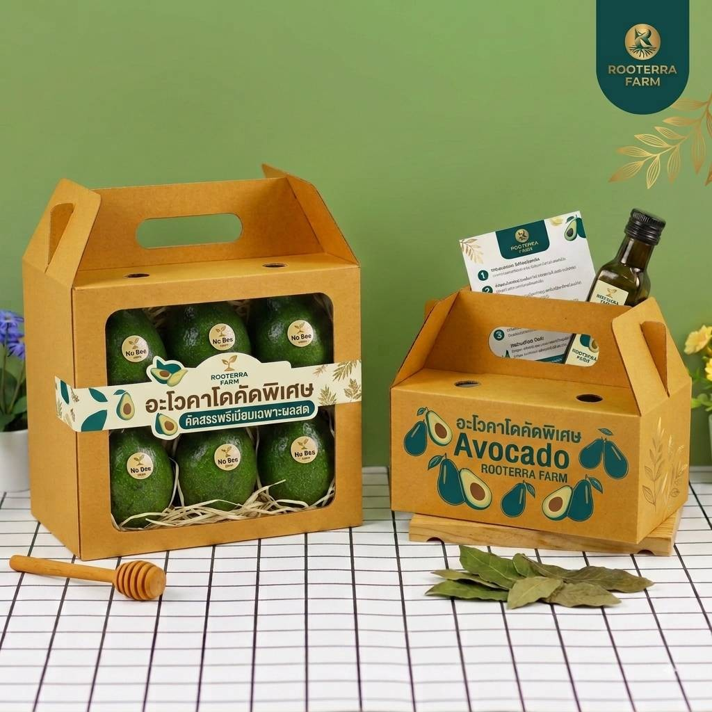
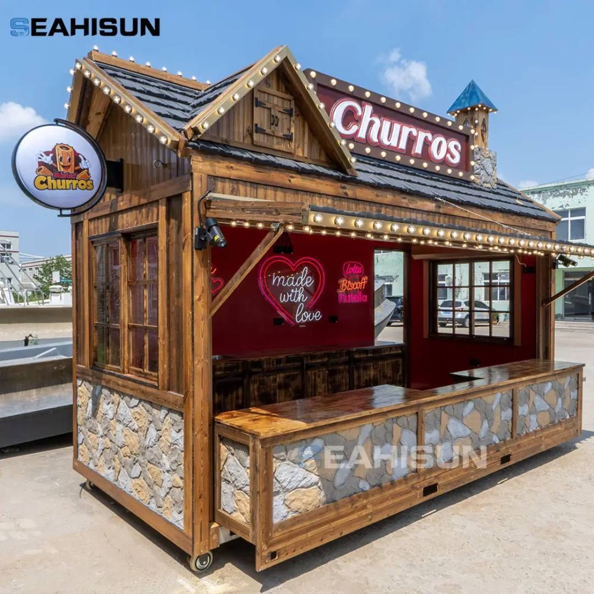
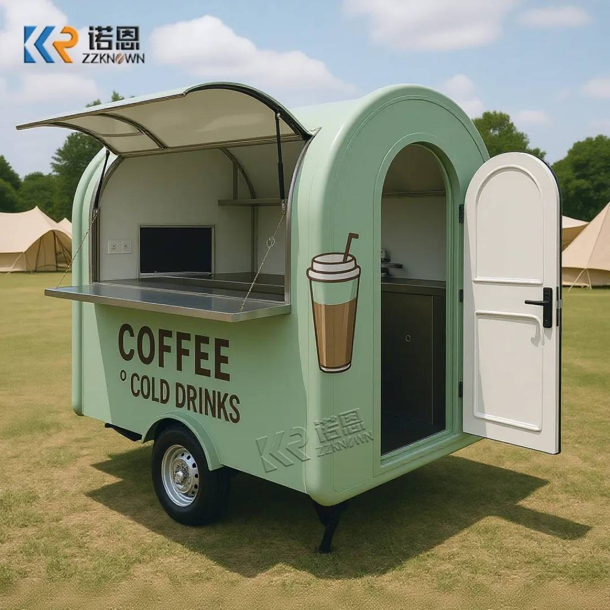

01
BUSINESS STRATEGY
วิเคราะห์ธุรกิจ วางกลยุทธ์ สร้างตำแหน่งทางการตลาด และกำหนดทิศทางที่ชัดเจน
BUSINESS CREATIVE PARTNER
PRIMEX PRO เชื่อม Strategy, Brand Identity, Website, Content และ AI Creative เพื่อให้ธุรกิจสื่อสารได้ชัด ดูน่าเชื่อถือ และพร้อมเปลี่ยนการมองเห็นให้เป็นโอกาส
Professional Design • Business Solution • Premium Products

ABOUT / BUSINESS CREATIVE PARTNER
PRIMEX PRO มองงานสร้างแบรนด์เป็นระบบเดียวกัน ตั้งแต่เป้าหมายทางธุรกิจ การวาง Positioning ภาพลักษณ์ เว็บไซต์ ไปจนถึง Content ที่ใช้สื่อสารและขายจริง
เป้าหมายไม่ใช่เพียงให้แบรนด์ “ดูดี” แต่ต้องทำให้คนเข้าใจ เชื่อมั่น และอยากเริ่มต้นคุยกับธุรกิจของคุณ
WHAT WE DO
บริการของเรา
วิเคราะห์ธุรกิจ วางกลยุทธ์ สร้างตำแหน่งทางการตลาด และกำหนดทิศทางที่ชัดเจน
สร้างอัตลักษณ์แบรนด์ที่แตกต่าง ตั้งแต่แนวคิด Logo, Visual Identity ไปจนถึงระบบแบรนด์ที่มีคุณค่า
ออกแบบเว็บไซต์ที่ไม่ได้มีเพียงความสวย แต่ช่วยสื่อสารคุณค่า สร้างความน่าเชื่อถือ และสนับสนุนการขาย
วางแผน Content และสร้างสื่อที่ทำให้แบรนด์สื่อสารอย่างต่อเนื่อง ชัดเจน และเป็นที่จดจำ
ผสาน AI เข้ากับงานออกแบบและ Content เพื่อเพิ่มความเร็ว ประสิทธิภาพ และสร้างโอกาสใหม่ให้ธุรกิจ
BRAND IDENTITY SHOWCASE
เราออกแบบระบบภาพลักษณ์ให้ธุรกิจดูเป็นหนึ่งเดียว ตั้งแต่โลโก้ สี ฟอนต์ Presentation, Stationery ไปจนถึงองค์ประกอบที่ลูกค้าเห็นทุกวัน
ปรึกษาการสร้าง Brand Identity →
OUR SIGNATURE PROCESS
From Business Insight to Market Impact — จากความเข้าใจธุรกิจ สู่แบรนด์ที่พร้อมออกสู่ตลาด
“เราไม่ได้ถามก่อนว่าอยากได้โลโก้แบบไหน
เราถามก่อนว่า คุณต้องการให้ธุรกิจไปถึงไหน”
สินค้า ธุรกิจ คู่แข่ง ราคา จุดแข็ง ปัญหา และเป้าหมาย
Target Customer, Insight, Positioning และ Value Proposition
Brand Concept, Logo, Color, Typography, Message และ Visual System
Packaging, Label, Gift Set, Menu, Signage, Booth และ Customer Experience
Website, Social, Marketplace, Content, Video และ Sales Materials
Launch, Campaign, Feedback, Optimization และการต่อยอดตลาด
FROM PRODUCT TO MARKET
ตั้งแต่สินค้าที่มีอยู่ในมือ ไปจนถึงภาพลักษณ์ บรรจุภัณฑ์ คอนเทนต์ และช่องทางขายที่เหมาะกับลูกค้าจริง
วิเคราะห์สินค้า ราคา จุดเด่น คู่แข่ง และโอกาส
กำหนดคนซื้อจริง พฤติกรรม งบ และเหตุผลตัดสินใจ
วางระดับตลาด บุคลิก และคุณค่าที่ต้องการให้จดจำ
Logo, Color, Typography และ Graphic Direction
กล่อง ถุง ฉลาก สติกเกอร์ การ์ด และประสบการณ์สินค้า
เลือก Website, LINE, TikTok, Facebook, Marketplace หรือ Offline
ภาพ วิดีโอ Sales Copy, Ads และแผนเปิดตัว
ต่อยอดสินค้า ช่องทาง ตลาด และระบบแบรนด์
PRIMEX PROJECT BLUEPRINT™
ลูกค้าไม่ได้ซื้อเพียง “รูปสวย” แต่ได้รับกรอบความคิดที่เชื่อมธุรกิจ ลูกค้า แบรนด์ และตลาดเข้าด้วยกัน
Prepared exclusively for your business
STRATEGY • BRAND • MARKETCHOOSE HOW FAR YOU WANT US TO GO
เริ่มจากจุดที่เหมาะกับธุรกิจ แล้วค่อยเติบโตไปด้วยกัน
สำหรับธุรกิจที่ยังไม่แน่ใจว่าควรวางแบรนด์และขายอย่างไร
จาก “มีสินค้า” สู่ “มีแบรนด์” ที่มีระบบภาพลักษณ์ชัดเจน
จากสินค้า → สู่แบรนด์ที่พร้อมออกตลาด
Creative Team หลังบ้านสำหรับธุรกิจที่ต้องการพัฒนาต่อเนื่อง
PRIMEX CUSTOM PROJECT™
มีสินค้าแล้ว แต่ยังไม่รู้ว่าจะทำให้กลายเป็นธุรกิจหรือแบรนด์ที่พร้อมขายอย่างไร? เราสามารถวาง Concept และ Scope ให้ทั้งระบบ
CUSTOM PROJECT CAPABILITIES
เหมาะกับสินค้าอาหาร เกษตร ของขวัญ ร้านกาแฟ Kiosk, Retail และธุรกิจที่ต้องการระบบภาพลักษณ์ครบชุด
วิเคราะห์กลุ่มลูกค้า ราคา คู่แข่ง พฤติกรรม และช่องว่างตลาด
Logo, Color, Typography, Tone, Message และ Visual Direction
Box, Bag, Label, Sleeve, Sticker, Tissue, Ribbon, Card และ Gift Set
Kiosk, Cart, Booth, Menu, Signage, Counter และ Touchpoint หน้าร้าน
Product Visual, Social Content, Video, Landing Page และ Sales Copy
LINE, Website, TikTok, Facebook, Marketplace และ Launch Plan
FREE INITIAL PROJECT REVIEW
ส่งธุรกิจของคุณมาให้ PRIMEX PRO ดู เราจะช่วยชี้ให้เห็น 3 จุดที่ควรพัฒนาก่อนลงทุนทำแบรนด์
OUR WORK / PRODUCT TO MARKET
เราแสดงทั้ง Real Case Study และ Concept Direction อย่างชัดเจน เพื่อให้ลูกค้าเห็นวิธีคิด ไม่ใช่เพียงภาพสวย

จาก “อะโวคาโดขายเป็นผล” → สู่ Premium Gift Set ที่มี Brand, Packaging, Content และ Online Selling Direction
วิเคราะห์กลุ่มลูกค้า → วาง Positioning → ออกแบบ Brand → Cart / Kiosk → Menu → Cup → Social Media → Delivery
* ตัวอย่างเชิงแนวคิดเพื่ออธิบายขอบเขตบริการ ไม่ใช่ผลงานลูกค้าจริง
สร้างระบบ Logo, Color, Gift Box, Shopping Bag, Ribbon, Card, Online Store และ Visual Language ให้ทุก Touchpoint เป็นแบรนด์เดียวกัน
* ตัวอย่างเชิงแนวคิดเพื่ออธิบายขอบเขตบริการ ไม่ใช่ผลงานลูกค้าจริง
VISUAL DIRECTION LIBRARY
ภาพในส่วนนี้ใช้เป็น Reference Direction เพื่ออธิบายขอบเขตงานและแนวทางสร้างสรรค์ ไม่ใช่ผลงานลูกค้าของ PRIMEX PRO โดยตรง




HOW WE USE REFERENCES
WHO WE CAN BUILD FOR
ฟาร์ม ผลไม้ อาหารแปรรูป ของฝาก และสินค้าเกษตรพรีเมียม
กาแฟ เครื่องดื่ม รถขายสินค้า Kiosk และ Pop-up
ของขวัญ แฟชั่น เครื่องประดับ ของใช้ และสินค้าพรีเมียม
ธุรกิจท้องถิ่น OTOP ร้านค้า และเจ้าของสินค้าที่ต้องการยกระดับภาพลักษณ์
BEFORE WE START
ได้ เราสามารถเริ่มจาก Brand Foundation เพื่อกำหนดตัวตนและทิศทางก่อนสร้าง Logo หรือ Website
สามารถเริ่มจาก Brand Audit แล้วปรับระบบภาพลักษณ์ เว็บไซต์ และ Content โดยไม่จำเป็นต้องรื้อทุกอย่าง
ส่งข้อมูลธุรกิจ ปัญหาที่กำลังเจอ และสิ่งที่อยากให้เกิดขึ้นผ่าน LINE ได้เลย
START A PROJECT
เล่าให้เราฟังเล็กน้อยเกี่ยวกับธุรกิจของคุณ เพื่อให้ PRIMEX PRO วิเคราะห์ว่าควรเริ่มต้นจากจุดไหน
LET'S BUILD SOMETHING VALUABLE
ถ้าคุณมีธุรกิจอยู่แล้ว เราอาจไม่ได้เปลี่ยนสิ่งที่คุณขาย แต่เราจะช่วยเปลี่ยนวิธีที่ตลาดมองเห็นคุณ